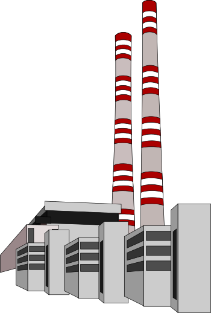

Model response
Move one slider at a time and watch the energy balance change.
Surface temperature
12.7 °C
285.8 K
Effective temperature
252.6 K
Planetary albedo
0.325
Infrared optical depth
0.852

incoming solar
infrared
Try an experiment
Change one variable, note the temperature response, then press Reset before testing another. This makes cause and effect easier to see.